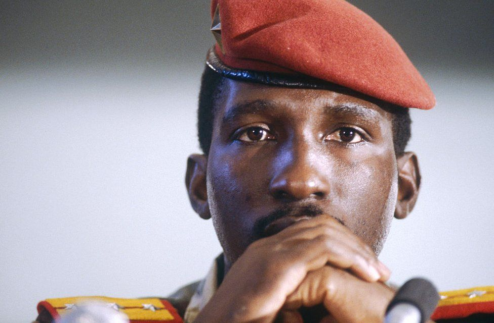
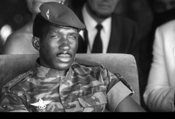
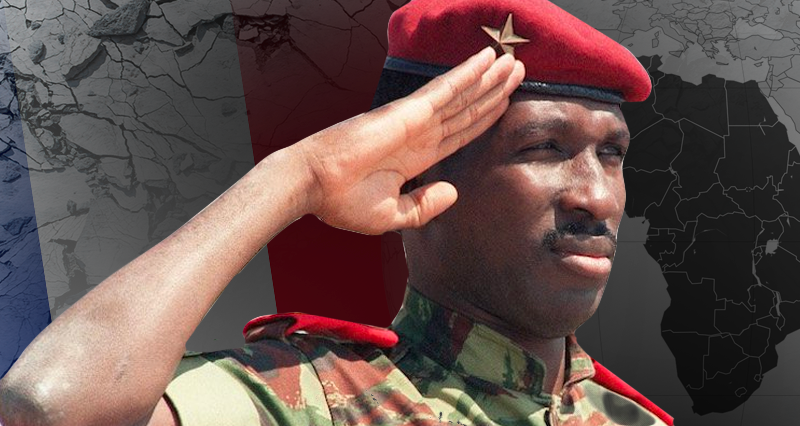

Thomas Sankra



click here
Interesting Facts About Thomas Sankara
- Former Burkina Faso President Thomas Isidore Noël Sankara, one of Africa’s most celebrated leaders, was killed in a military coup on 15 October 1987
- The popular leader commonly referred to as “Africa’s Che Guevara” is credited with laying the foundation for Burkina Faso’s ambitious drive for democratic, social and economic change.
- Sankara ruled for only four years, but left a lasting legacy, one that is celebrated not only in Africa but the world at large.
- The military captain turned pan-Africanist seized power in a popularly-supported coup in 1983, aged just 33 years old.
- Sankara’s main vision for the landlocked West African country was simple; eliminate corruption and end the French dominance.
- To begin the country’s new era, he renamed the country from the French colonial Upper Volta to Burkina Faso, meaning “Land of Upright Man.”
- The pan Africanist’s political agenda was clear to see, but so was his vision in other sectors including health, environmental conservation, education, women empowerment and much more.